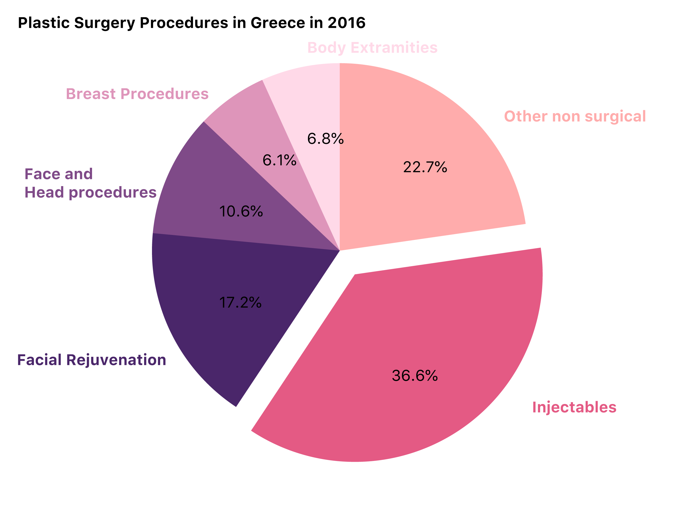
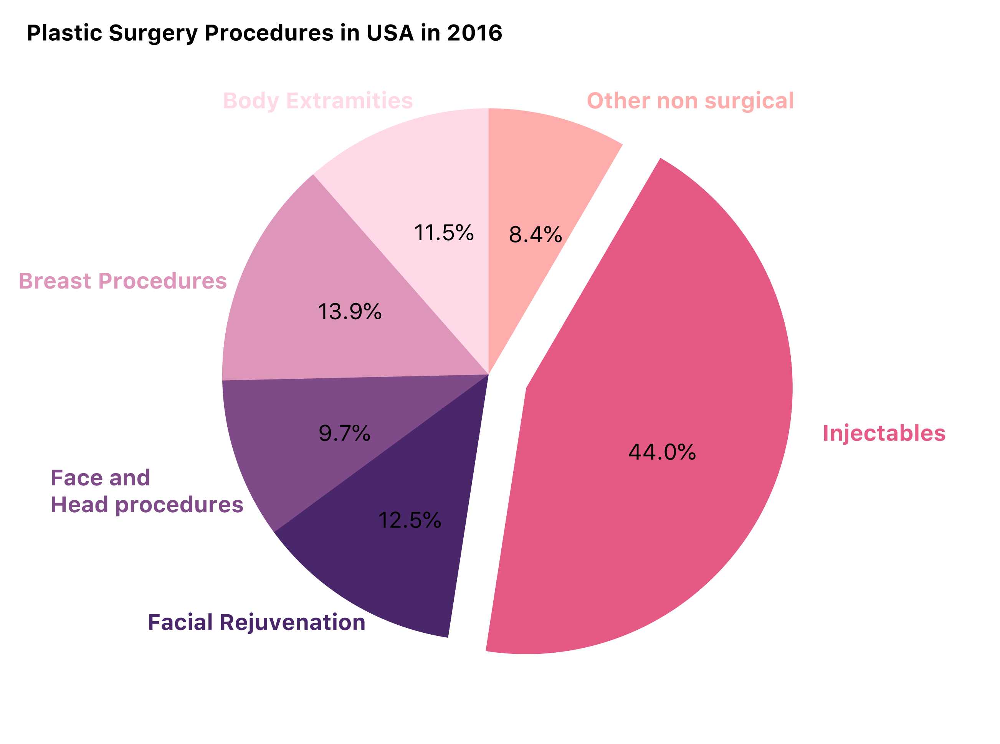
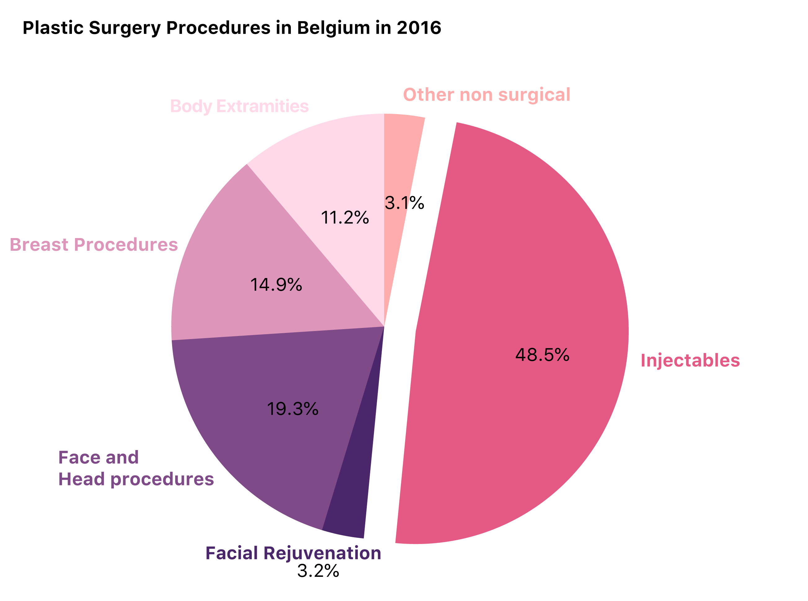

Data Studio peoject
What is the vaniest country in the world?
BY Sirui Zhu
Plastic surgery is popular with people all around the world.
The International Society of Aesthetic Plastic Surgeons has collected data on the incidence of surgical and non-surgical cosmetic procedures.
Global Plastics Surgery procedures
In 2016 data, The U.S. leads in total numbers of procedures but, accounting for population, fall into 5th place. Greece leads for the number of procedures per person, followed by Belgium and Italy.
We can see that 25 in 1000 Greek people have plastic surgeries, with 0.29 millions procedures in 2016. The US has the most procedures with 4.22 millions. (The 2016 data didn't including China and South Korea, according to no completed surveys responding.)

SOURCE: International Society of Aesthetic Plastic Surgery
Popular types for countries
Procedure types are different over countries. In Greece, injectables are most popular, including Botulinum Toxin, Calcium Hydroxylapatite, Hyaluronic Acid, Poly-L-Lactic Acid.
While other non-surgical procedures like Hair Removal is the most popular according to the data.

SOURCE: International Society of Aesthetic Plastic Surgery
In the US, injectables are the most popular as well, and people are care Breast more. Those procuders including a largest amopunt od Breast Augmentation with silicone procedures and Bresat Lift. While people want bigger boops, some get breast reduction procedures. The US and Brizilian get the most Breast reduction procedures in 2016.

SOURCE: International Society of Aesthetic Plastic Surgery
In Belgium, injectables are also welcome. Followed by face and head procedures, with people doing Eyelid surgery, Fat Grafting-face and Facelift the most.

SOURCE: International Society of Aesthetic Plastic Surgery
How about in gender globally?
You are right, female care about their beauty more. However there is a slightly increase for male in recent years.
Botulinum Toxin is popular with bioth women and men, as well as Hyaluronic Acid. The Botulinum procedures for female is like 6 times higher than male.

SOURCE: International Society of Aesthetic Plastic Surgery
Which country care about face most?
According to the data collected from ISAPS, it seems Brazilian get the most face and head surgeries, followed by the US, Mexico, Germany and Columbia.

SOURCE: International Society of Aesthetic Plastic Surgery